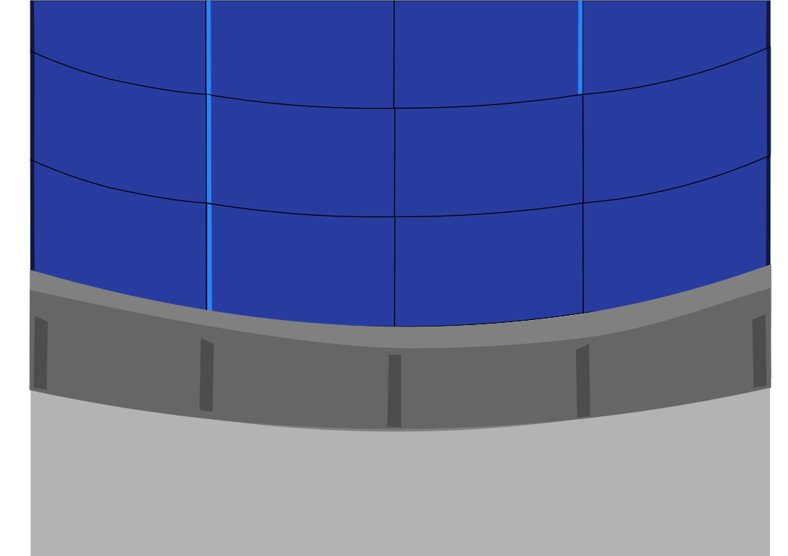
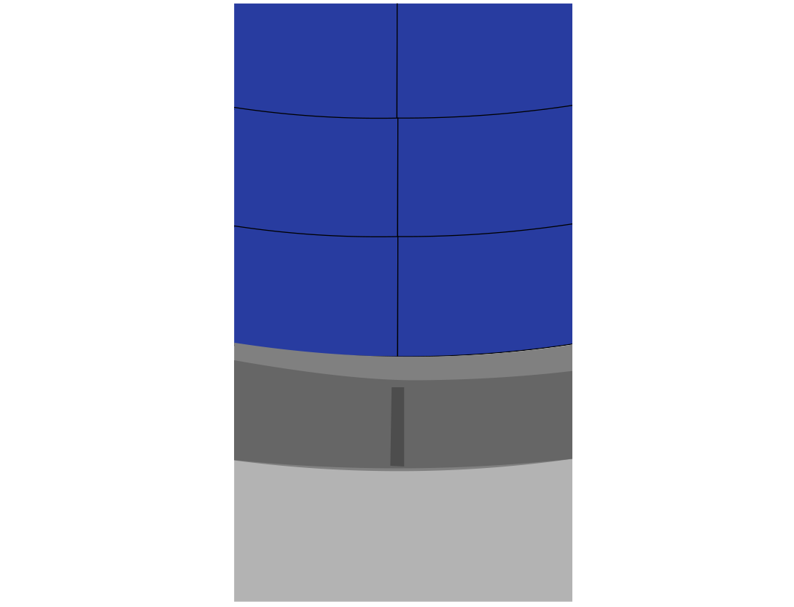
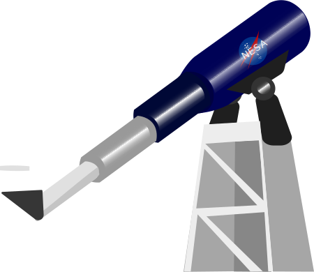
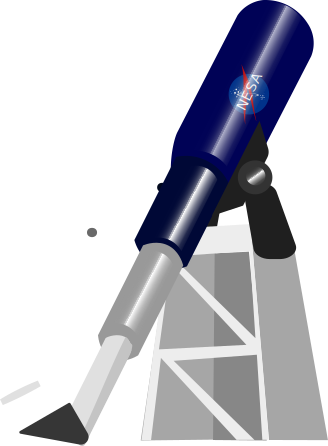

¡bienvenido astronom@!, ¿list@ para descubrir planetas?, haz click
en "descubrir" para empezar a buscar en el telescopio, o si quieres,
puedes personalizar tu propio planeta a tu antojo, en ese caso haz
click en "crear"

